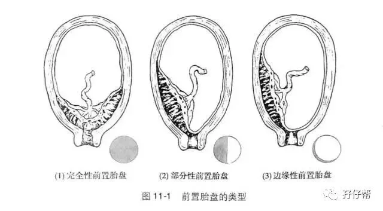
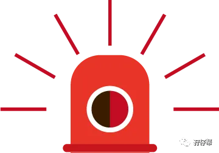

点击上方蓝字 ，与您分享双胞胎育儿经！
文|圆圈妈，一个文思如尿崩的双胎妈妈
01
孖仔帮孕期群经常有宝妈提到胎盘低置，尤其是那些尚在早孕期，刚发现自己怀了双胎的准妈妈，看见B超提示胎盘低置，吓惨了。
上来就问：“圆圈妈，胎盘低置会不会大出血啊！？”
“.…”
今天整理了下答案，分享给那些被胎盘低置吓得元神出窍的双胎准妈妈。
胎盘低置和胎盘前置
这两个看着好像一样，傻傻分不清，但却是完全不一样的两个概念.
来看下段涛大夫的解释！
Q：胎盘前置和胎盘低置有区别吗？
A：有啊，当然有区别，看一下以下的示意图，前置胎盘分为三类：
完全性（中央性）前置胎盘：胎盘组织完全覆盖宫颈内口。
部分性前置胎盘：胎盘组织部分覆盖宫颈内口。
边缘性前置胎盘：胎盘下缘附着于子宫下段，下缘到达宫颈内口，但是没有超越宫颈内口。
低置胎盘：胎盘位于子宫下段，胎盘下缘接近但是没有达到宫颈内口，称为低置胎盘，如果胎盘下缘距离宫颈内口的距离超过70mm，就不是低置胎盘了。
（以上Q&A引用于段涛大夫的文章《你问我答 之 胎盘低置怎么办？》）
部分准妈妈的B超单上可能会有这样的字眼“胎盘下缘距离宫颈内口的距离**MM”
按段爷的意思，只要低于70MM，B超都会提示说胎盘低置。因为B超存在描述的主观性，不同诊断医生由于经验不同、工作的严谨性不同，可以有不同的诊断提示。
有些医生会觉得问题不大，或者觉得数值相差不是很大就不提示出来，有些就会提示出来，
但不管怎样都不必因早中孕期的胎盘低置，忐忑不安。
此时，你再了解下胎盘的生长规律就会明白为什么不必过分担心了。
一般正常怀孕时，胎盘是附着在子宫腔前壁、后壁或顶部位置，通常是会随着怀孕周数的增加而往子宫顶部方向移动，并不是胎盘真的会自己动，而是子宫随周数变大，胎盘主要部位也跟着向上提升了。
通常前置胎盘宜在妊娠二十八周后才诊断，也即是说胎盘真的是会自己长上去的，这是它自身的发展规律，跟你躺不躺床上没有多大关系。
02
再来看看段爷对胎盘低置要不要卧床这件事情是怎么回答的。
Q：胎盘低置要卧床休息吗？
A：其实最需要卧床休息的是又忙又累的临床医生，是我这种人，但是我们没那么好的福气啊。
前置胎盘，包括中央性前置胎盘都没有必要卧床休息，除非是前置胎盘伴有出血，即使是出血，也不是绝对卧床休息。
是建议多休息，不要劳累，不一定要躺在床上不动，吃喝拉撒都在床上。
胎盘低置，没有出血，就更不需要卧床休息了，该干嘛就去干嘛。
别说你了，就是你强壮如牛的老公，你让他躺在床上不动，连躺三天，他也会躺出病来的。
是多休息，可以卧床，但不是绝对WoChuang，WoCao！
（以上Q&A引用于段涛大夫的文章《你问我答 之 胎盘低置怎么办？》）
因此，那些企图通过绝对卧床或者把屁股垫高这些方法把胎盘长上去的准妈妈，是不是该起床活动下了！
再躺下去可真的会出问题的：水肿，面瘫，便秘，痔疮….
我在孕12周NT时，B超提示胎盘低置状态，医生并没有要求我卧床保胎，只说别太劳累。
是我自己想不开，手贱问度娘，结果在那些杂七杂八的问答中凌乱了。
不仅如此，还真的照做了，除了吃饭拉臭臭，老娘就在床上呆着了哈！
结果就是，我在孕18周就开始水肿了。
23周四维大排畸，胎盘依然显示低置状态。此刻，拿刀架在我脖子上，我都躺不下去了。
随便吧！再躺下去，我真的会废掉了！于是该干嘛干嘛了！
孕28周，B超已经没有提示胎盘低置了！也就是胎盘自己长上去了。
参考资料：
段涛医生的完整版科普文章《你问我答 之 胎盘低置怎么办？》https://mp.weixin.qq.com/s/SG_iYT7n4RgcPcEctngzWQ
#重磅互动#
评论区聊一聊
你希望圆圈妈写什么经验分享？
随便提，万一下篇就写了呢？
往期孕期答疑回顾：
孖仔帮·双胎孕期答疑第1期|双胎产检和单胎产检有什么区别
本文系圆圈妈sgguy-com原创，来源于孖仔帮，专注双胞胎孕期育儿经验分享，著作权归孖仔帮所有。
关于这个号
谢谢关注！我是圆圈妈
85后，全职双胎妈妈
家有孖仔男宝两枚，圆圈&圈圈
双胞胎育儿公众号：孖仔帮
旨意分享双胞胎育儿经验帮助双胞胎家庭
有经验可循
有组织可靠
希望我的经验对您有所启发
期待与您一起共享双胞胎育儿经
孖仔帮目前有4个微信社群
孕期群，喂养群，闲置群，双胞胎爸爸专属群，
如需入交流群，请+圆圈妈的微信号sgguy-com,或扫描下方二维码
由圆圈妈邀请入群
更多孖仔帮双胞胎原创育儿文章请猛戳 "阅读原文" 或者直接上圆圈妈的个人博客。
博客链接：https://www.sgguy.com/twinsbang


